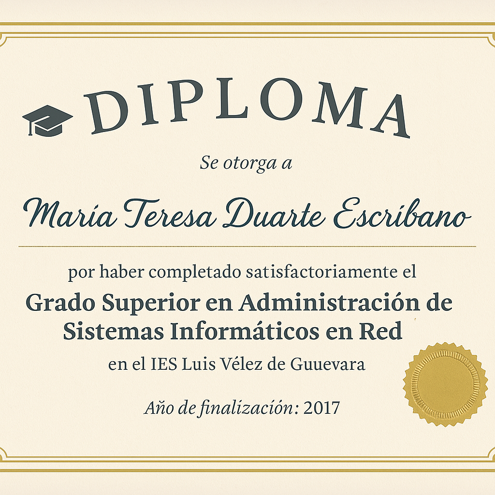

🧪 Experiencia: Más de 5 años como QA funcional en entornos Agile.
🔍 Especialidad: Diseño y ejecución de pruebas manuales, análisis de incidencias y trabajo colaborativo con desarrollo y producto.
💻 Herramientas: Depuración web con herramientas de desarrollador, análisis de tráfico de red.
📄 Documentación: Funcional, técnica y casos de prueba.
🤖 IA: Apoyo con inteligencia artificial en tareas analíticas.
🌐 Conocimientos técnicos: HTML, CSS, JavaScript, JSON, MySQL, SQL, SOAP, Postman, Git
🗣️ Idiomas: Español nativo, Ingles Profesional
🚀 Objetivo: Crecer hacia automatización de pruebas.
En virtud de sus méritos y trayectoria, se hace entrega del presente diploma a nombre de:
por haber completado satisfactoriamente el
Grado Superior en Administración de Sistemas Informáticos en Red
en el IES Luis Vélez de Guevara
Año de finalización: 2017
